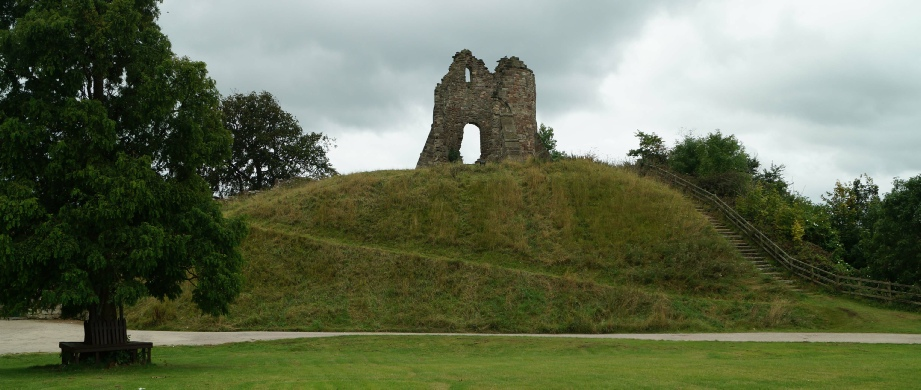
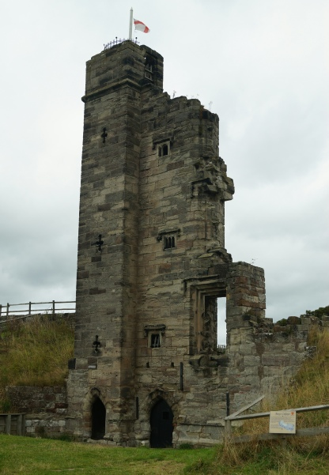
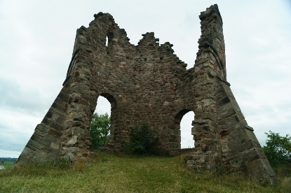
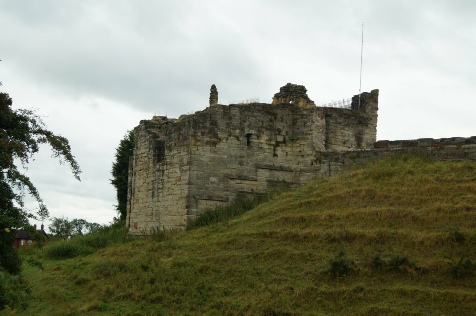
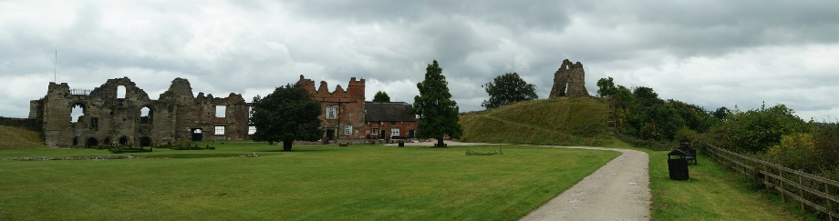
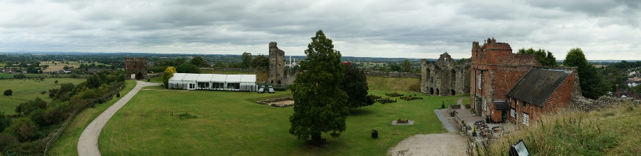

TUTBURY CASTLE, DE13 9JF
GETTING THERE
Postcode: DE13 9JF
Lat/Long: 52.859641N 1.690662W
Notes: Located in the village of the same name, Tutbury Castle towers above the local area. The site has a dedicated car park for visitors.
WHAT IS THERE TO SEE?
Extensive ruins of a major medieval fortress. The top of the motte can be accessed giving good views over the surrounding countryside. The lodgings of Mary, Queen of Scots no longer exist but the site is appropriately marked.
VISIT OFFICIAL SITE (Opens in new window)
Castle is owned by the Duchy of Lancaster .
ADDITIONAL NOTES
1. In 1831 the 'Tutbury Hoard' - possibly as many as 300,000 coins - were discovered in the vicinity. These were seemingly buried in the fourteenth century following Thomas Earl of Lancaster's defeat at the Battle of Burton Bridge (1322). Unfortunately many of the coins have been subsequently lost.
2. Following the Royalist defeat at the Battle of Naseby (1645) , Prince Rupert stayed at Tutbury Castle.
Mary, Queen of Scots . The lodgings of Mary, Queen of Scots no longer exist but were positioned here, near the North-East tower.
Folly . The stone structure on the top of the motte are the remains of a folly built during the eighteenth century.
Overlooking the River Dove, Tutbury Castle was built following the Norman invasion and later became a major medieval fortress. Seeing action during the Anarchy, the 1173 rebellion against Henry II, the Second Barons War and the Civil War, it is nevertheless most famous as the prison of Mary, Queen of Scots.
HISTORY OF TUTBURY CASTLE
Tutbury Castle was initially built around 1068 by Hugh d'Avranches who had been granted the lands by William I. He constructed an earth and timber motte-and-bailey castle on the site but in 1071, the first recorded reference to the fortification, it was granted to Henry de Ferrers. Dominating the local town, which at the time of the Domesday survey of 1086 was the largest in Staffordshire, the Ferrers made it their primary residence. Early in the twelfth century the wooden tower on top of the motte was replaced with a stone Keep in fitting with the increasing prominence of the family; in 1138, following his success at the Battle of the Standard, Robert de Ferrers was created Earl of Derby by King Stephen. However, the Ferrers support for Stephen prompted an attack on Tutbury in 1153 by Henry of Anjou (later Henry II). His forces attacked again in 1173 when the castle was besieged by the forces of Rhys ap Gruffydd, Prince of Dehebbarth acting in support of the Crown. The owner of the Tutbury at this time was William de Ferrers who had joined the rebellion of the King's sons against their father. The rebellion was ultimately defeated and William pardoned but Tutbury was partially demolished - one of at least twenty castles slighted as a consequence of the revolt.
In the mid-thirteenth century the Ferrers family became embroiled in the Second Baron's War (1264-7). The castle was attacked by Lord Edward (later Edward I) on behalf of his father, Henry III. After the decisive defeat of the Barons leader, Simon de Montfort, at the Battle of Evesham (1265) a conciliatory approach was taken to the former rebels. However, following a further rebellion by Ferrers in 1266, the castle was confiscated and granted to Edmund Crouchback, second surviving son of Henry III and later Earl of Lancaster.
Either Edmund or his son Thomas made extensive upgrades to the castle repairing the damage done by Lord Edward. A new gateway was built at this time and the curtain wall upgraded. Thomas had been instrumental in the downfall of Piers Gaveston; along with the Earl of Warwick he had engineered his arrest, trial and execution. After biding his time Edward II got his revenge - he defeated Thomas at the Battle of Burton Bridge on 10 March 1322 with the Earl arrested and executed at his very own Pontefract Castle . Tutbury was restored to his brother - Henry, Earl of Lancaster - in 1326.
In 1351 the Earldom of Lancaster was elevated to a Dukedom with Henry of Grosmont becoming first Duke of Lancaster. Through the marriage of his daughter, Blanche, it passed to John of Gaunt who was the third son of Edward III. He made some repairs and regularly visited Tutbury. Upon his death Richard II attempted to dispossess his son, Henry Bolingbroke, but in 1399 he overthrew the King with Tutbury castle, along with the rest of the Duchy of Lancaster, then becoming merged with the Crown.
The castle went into some decline during the fifteenth century although the South Tower was added around 1450 and in 1511 it was still in sufficiently sound state to host a visit by Henry VIII. By the 1520s though it was reportedly in a dilapidated state; the Kitchen roof had fallen down and the curtain wall had split from subsidence. Repairs were made between 1561-6.
In 1569 onwards the castle hosted its most famous prisoner - Mary, Queen of Scots. Throughout the proceeding years she had been in dispute with her leading magnates culminating in an encounter at Carberry Hill near Edinburgh on 15 June 1567 where she surrendered to her opponents and was briefly imprisoned at Lochleven Castle . Forced to abdicate in favour of her infant son, James, she escaped and rallied her forces but was defeated at the Battle of Langside on 13 May 1567. She fled to Carlisle Castle in England then under the care of Henry Scrope, Warden of the Western Marches. He moved her to his own Bolton Castle in North Yorkshire but his custody of Mary drew criticism as he had allowed her freedom to meet with local Catholics. Under the guard of a new gaoler - Sir Francis Knollys - she was moved to Tutbury in January 1569.
Mary would be imprisoned in the Midlands for 18 years. Whereas her time at Bolton had been in reasonable comfort with significant freedoms afforded, her new accommodation was clearly not to her liking. Although lodged in refurbished Royal quarters, she regularly complained about the cold. George Talbot, Earl of Shrewsbury was assigned as her new gaoler and in June 1569, due to concerns over a planned rescue attempt, he moved her to Wingfield Manor. Briefly returned to Tutbury later in the year, she was then moved to Coventry when a pro-Catholic rebellion ignited in the north of England. In January 1570, once the rebellion had been suppressed, Mary was moved back to Tutbury. As one of the objectives of the uprising had been to place Mary on the throne of England, she was now held with significantly more restrictions than before.
In May 1570 Mary was moved from Tutbury when her health deteriorated significantly. She spent the next fifteen years accommodated in various establishments around the Midlands before being returned to Tutbury Castle on 14 January 1585. Initially held in some comfort, the arrival of Sir Amyas Paulet as her new gaoler in April 1585 marked her most severe confinement yet. A die-hard Puritan with little time for the Catholic Queen he relocated her to Chartley Castle on Christmas Eve 1585. Her subsequent involvement in the Babbington Conspiracy led to her trial and execution at Fotheringhay Castle on 8 February 1587.
After Mary's departure the fabric of the castle was allowed to decay and by the late sixteenth century it was reported as ruinous although James I stayed here several times between 1619-24. During the Civil War however, the castle was hastily re-fortified and held for the King. A Parliamentary attempt to dislodge the garrison in 1643 failed and it wasn't until April 1646, long after Royalist hopes for victory had long since ended, that the next significant effort was made to take the castle. The garrison surrendered after a three week siege and Parliament ordered the fortification to be slighted. This demolition work took place between 1647-8 and, although some parts of the site were repaired and made habitable again later in the seventieth century, the defensive elements were left to ruin. A folly was built on top of the motte in 1780 and thereafter the site was used as a farm.
© Copyright 2016 | Terms and Conditions (inc Cookie Policy) | Contact Us
Recovered original photographs and gallery





